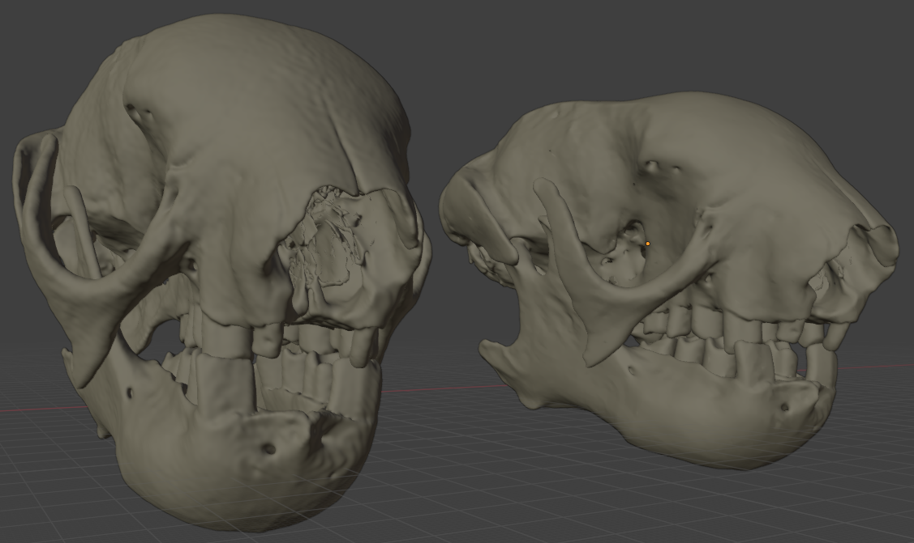
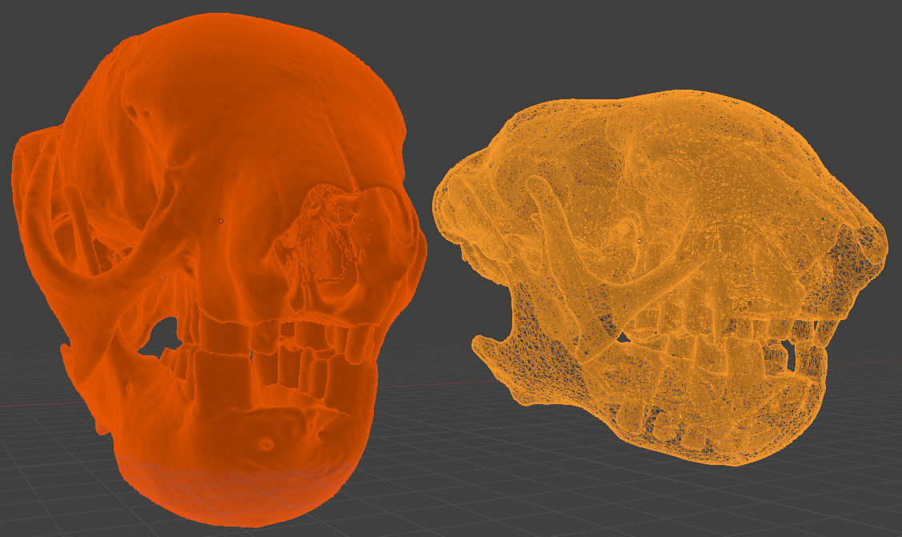
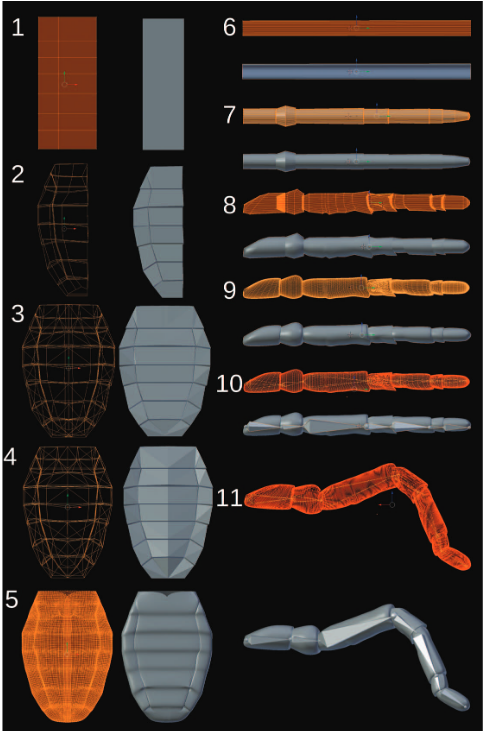
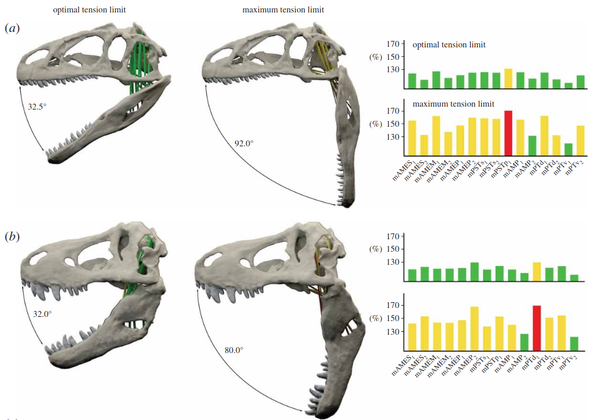
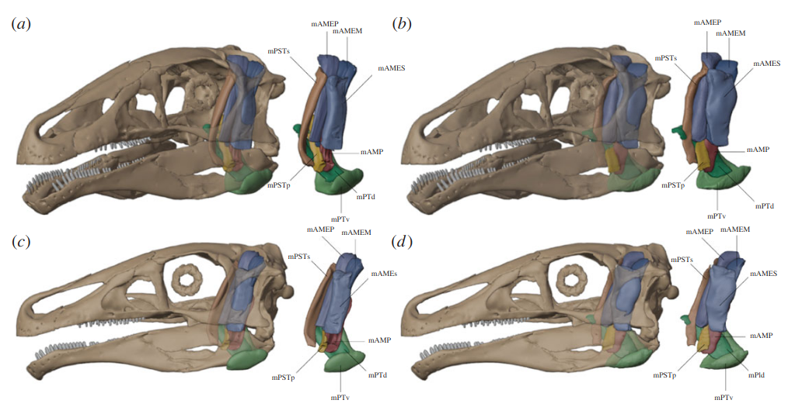
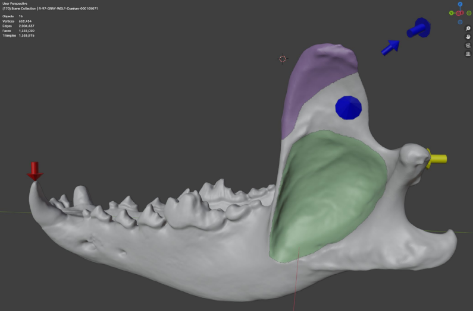

Paleontología Virtual
Día 4: Optimización y Escultura Digital
2026-04-20
Introducción a Blender
¿Qué es Blender?
Blender es una suite de creación 3D de código abierto, gratuita y multiplataforma, mantenida por The Blender Foundation.
Lanzado bajo una licencia GNU (General Public License), cubre la totalidad del pipeline 3D.
- Modelado y escultura: Creación y modificación de mallas detalladas
- Animación y rigging: Simulación de movimiento mediante “huesos”
- Renderizado: Trazado de rayos avanzado
- Edición y composición: Postproducción incorporada

Propiedades y Ventajas
Ventajas principales
- Alternativa a software comercial: A pesar de ser gratuita, sus capacidades rivalizan con programas costosos de alta gama como Maya o 3ds Max (Garwood y Dunlop 2014).
- Versatilidad de formatos: Permite importar y exportar desde .OBJ, .STL, .PLY hasta formatos industriales.
- Renderizado realista (Raytracing): Simula el comportamiento físico de la luz para imágenes y videos de calidad para publicación.
- Comunidad global: Actualizaciones gratuitas y continuas con un vasto ecosistema de tutoriales.
Limitaciones a considerar
- Curva de aprendizaje: Interfaz gráfica compleja para nuevos usuarios frente a software más específico. El artículo proporciona una guía paso a paso (material suplementario) para mitigar esta dificultad (Garwood y Dunlop 2014).
- Rendimiento con mallas crudas: Mallas enormes (como las obtenidas directamente de un CT scan o fotogrametría densa sin limpiar) pueden ralentizar considerablemente la aplicación.
- No es software analítico: Permite simulación física y visual, pero no es un paquete para análisis biomecánico.
Uso de Extensiones (Add-ons) y Python
Blender se destaca por su gran capacidad de personalización y automatización.
Integración con Python
- El núcleo de Blender incorpora una consola interactiva de Python 3.
- Todo lo que se hace gráficamente en Blender se puede ejecutar mediante scripts programados (
import bpy). - Automatiza el procesamiento por lotes (ej. reescalar, simplificar e iluminar cientos de mallas a la vez).
- Facilita la interoperabilidad al usar bibliotecas científicas de Python en conjunto con el entorno visual.
Extensiones (Add-ons)
- El uso de extensiones expande nativamente las funciones de Blender.
- Ejemplo en Paleontología: Add-ons como Measure and Scale ayudan a dar dimensiones métricas a fotogrametría suelta.
- Add-ons de impresión 3D (3D Print Toolbox) detectan rápidamente voladizos o mallas no cerradas (“non-manifold”).
Limpieza y Reparación de Mallas
Optimización de Modelos Escaneados
Las mallas resultantes de Fotogrametría o CT suelen contener errores, ruido estadístico y millones de polígonos innecesarios.
Problemas comunes
- Geometría defectuosa: Polígonos superpuestos, normales invertidas, bordes abiertos.
- Sobre-densidad (Exceso de polígonos): Partes planas que tienen miles de vértices sin aportar detalle al relieve.
- Artefactos “flotantes”: Restos de la matriz, roca, o puntos perdidos en escaneos láser.
Flujo de optimización
- Importación y escalado
- Selección y limpieza manual: Borrar partes flotantes.
- Reparación topológica: Unir vértices y recalcular normales (
Shift + N). - Reducción de Polígonos (Decimation): Simplificar donde sea posible.
Reducción de Polígonos (Decimate)
El modificador Decimate en Blender nos permite reducir drásticamente el peso de un Fósil “crudo” sin perder su morfología aparente.
Métodos de Reducción
- Colapso (Collapse): Fusiona vértices progresivamente según un ratio. Mantiene la forma general y las áreas con bordes duros.
- Desubdividir (Un-Subdivide): Intenta simplificar topologías de mallas con un patrón base de grilla regular.
- Planar: Elimina vértices en superficies planas definiendo un ángulo límite, excelente para preservar bordes cortantes de dientes o garras.
Tip
Un modelo de 5 millones de caras puede reducirse a 300,000 caras sin perder detalle visual, agilizando su carga en plataformas web como Sketchfab.
Antes y Después


(Representación de una reducción poligonal)Escultura Digital
Herramientas de Escultura en Blender
El modo Sculpt de Blender permite interactuar con mallas 3D como si fueran arcilla digital.
Pinceles clave en Paleo
- Smooth: Esencial para borrar los escalones de las rebanadas en modelos exportados desde software de CT.
- Grab / Elastic Deform: Para retrodeformación manual o reposicionamiento.
- Flatten / Scrape: Para eliminar excrecencias de sedimentos virtuales unidos al hueso reconstruido.
- Clay Strips: Usado a menudo para recrear volumen en partes perdidas de un espécimen o simular tejidos musculares.
Dyntopo (Topología Dinámica)
- Mientras se esculpe, triangula automáticamente y añade polígonos sólo bajo el trazo del pincel.
- Ideal para esculpir restauraciones desde cero o fusionar fracturas virtuales de modo orgánico.
Blender en la Paleontología
Casos de Uso y Aplicaciones Directas
Blender se ha convertido en el eje central del flujo de trabajo de la paleontología virtual, ya sea como paso final o como base principal para simulaciones biomecánicas.
Áreas de uso documentado
- Reposicionamiento y Restauración: Reposicionamiento manual de elementos desarticulados (ej. re-articulación craneal) o remallado de elementos problemáticos.
- Pre-procesamiento Biomecánico: Delimitación de músculos. Creación de regiones musculares en huesos para simulaciones de Elementos Finitos (FEA) (Díaz de León-Muñoz, Boman, y Ferreira 2025).
- Animaciones Científicas: Difusión visual (videos, animaciones), reconstrucción de movimientos (Garwood y Dunlop 2014).
Caso de Estudio 1: Locomoción en Arácnidos Fósiles
Paper: The Walking Dead: Blender as a Tool for Paleontologists (Garwood y Dunlop 2014).
El Desafío y Flujo
- Recrear el paso (gait) de Palaeocharinus (Rhynie Chert, Escocia).
- Modelado: Reconstrucción basada en un pariente fósil tridimensional (Anthracomartus hindi).
- Animación (Rigging): Creación de un esqueleto digital con restricciones anatómicas reales y aplicación de cinemática inversa (IK).
- Resultado biomecánico: Demostración de una locomoción muy similar a arañas cursoriales modernas, aunque carente en especies derivadas.

Caso de Estudio 2: Apertura Mandibular (Maximum Gape)
Paper: Estimating cranial musculoskeletal constraints in theropod dinosaurs (Lautenschlager 2015).
Biomecánica en Terópodos
- Blender sirvió como plataforma para estimar los límites funcionales de estiramiento muscular.
- Se modelaron los músculos aductores de la mandíbula craneal como cilindros 3D interactivoevolutivas s.
- Validación biológica: Rango de elongación del músculo restringido entre 130% y 170% de su longitud de reposo.
- Resultado: Depredadores como T. rex lograban aperturas funcionales mayores (hasta 80°) frente a taxones herbívoros afines como Erlikosaurus (aprox. 45°).

Herramientas: Reconstrucción Muscular (MyoGenerator)
Reconstrucción Interactiva en 3D
Paper: A toolbox for the retrodeformation and muscle reconstruction of fossil specimens in Blender (Herbst et al. 2022)
- Propósito: Reconstrucción interactiva de la morfología muscular sobre modelos fósiles.
- Flujo: El usuario “pinta” las áreas de origen e inserción directamente sobre la malla.
- Automatización: Genera automáticamente volúmenes musculares 3D ajustables.
- Métricas: Calcula automáticamente volumen, longitud y centroides de unión, datos clave para estimar la fuerza muscular absoluta.

Caso de Estudio 3: Análisis de Elementos Finitos (BFEX)
Paper: BFEX: A Toolbox for Finite Element Analysis With Fossils and Blender (Díaz de León-Muñoz, Boman, y Ferreira 2025).
De Blender a la Ingeniería (FEA)
- Concepto: Add-on puente que conecta el entorno de diseño creativo con el software de cálculo científico (Fossils).
- Interfaz Gráfica: Permite delimitar visualmente escenarios biomecánicos (músculos, puntos focales, magnitudes de carga).
- Escalabilidad: Define las propiedades del material (Módulo de Young, Poisson) sin necesidad de programar scripts complejos.
- Eficiencia: Agiliza el flujo de trabajo de simulación de estrés y deformación ósea en especímenes fósiles.

Conclusiones del Día 4
Optimización
- Nunca asumamos que la malla “bruta” del escáner o fotogrametría está lista para usar.
- Debemos limpiar flotantes, reparar topología, y aplicar Decimate inteligentemente para un equilibrio entre detalle y optimización.
Potencia de Blender
- Su integración con Python y el sistema Add-on automatizan tareas titánicas en las colecciones.
- El uso de Rigging y constraints aporta herramientas biomecánicas reales, más allá de lo meramente estético, como se demostró en reconstrucciones analíticas.
Siguiente Paso
Práctica guiada: Importación de un hueso escaneado en clase usando Blender, reducción poligonal, y aplicación de pinceles para eliminar ruido derivado del CT.
Artículos de interés

E. Miguel Díaz de León Muñoz · Museo Virtual Nacional